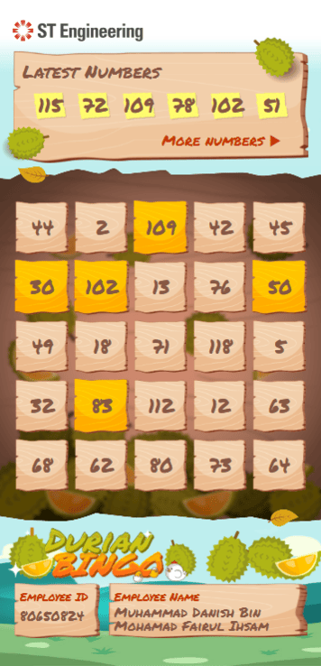

17+ years of design experience across aerospace, automotive, advertising and events, now focused on creating clear, practical digital products for complex operational environments. I turn dense requirements into interfaces
people actually trust, backed by a background in graphic design, front-end development and 3D/motion work.
Photorealistic 3D visualisation, graphics design, motion graphics, animation.
SELECTED WORK
Four case studies, four different pressure points.
All four come from enterprise aerospace work under NDA — company names,
part numbers and figures are anonymized or replaced with placeholders, but the workflow thinking
is unaltered. Open any of them for the full write-up.
AEROSPACE · SALES · ENTERPRISE
Engine Stream — Subcontract Module
Sole UX/UI Designer (End-to-end) · Component 1 of 11
A digital workbench that swaps chaotic vendor email chains for one-tap
approvals and a fully traceable audit history — designed around a 3-phase framework for
introducing AI into a high-stakes approval workflow without losing staff trust.
Sole UX/UI Designer (End-to-end) · UX & system architecture
A role-tailored dashboard that gives every part of a sales team — from the
director to the person logging bids — a live, one-stop view of the pipeline, replacing a
single spreadsheet that was quietly failing all three of them at once.
System architectureRole-based UXDashboard designAudit trail
design
AEROSPACE · SUPPLY CHAIN · ENTERPRISE
Materials Provisioning App
Sole UX/UI Designer (End-to-end) · UX & system architecture
A predictive purchasing tool that helps planners order the right spare parts
months before an engine arrives, replacing a five-spreadsheet manual process with one decision
workspace and taking the guesswork out of multi-million-dollar orders.
Sole UX/UI Designer (End-to-end) · UX & system architecture
A real-time dashboard that tracks shortage parts across the shopfloor, so
multi-million-dollar jet engines don't sit idle waiting on a spreadsheet — with dual fulfillment
views and a shared approval cart that replaced an email-based sign-off chain.
Enterprise UXDense data tablesProgressive
disclosureWorkflow design
MORE UI/UX WORK
Two more Figma projects — screens only.
UI/UX · APP FLOW
Maintenance App
Figma — Interface design & app flow
Screen designs and app flow for a facilities maintenance platform — tracking
assets, logging utility meter readings, and managing maintenance requests from report through to
resolution. Design only; no development build.
FigmaApp flowUI design
UI/UX · FULL-STACK BUILD
EPRS — Engines Project Request System
Figma design + Django & PostgreSQL development
Interface design and the working build behind it — submitting and tracking
engine project requests, from Figma screens through to a Django/PostgreSQL back end.
Design for shopfloor scheduling, materials operations and provisioning apps; part of an
Agile team modernising legacy MRO tools.
Sep — Nov 2024
Senior Designer
FirstCom Academy
Marketing assets and photorealistic 3D venue visualisations for learner recruitment
campaigns.
2020 — 2024
Senior Graphics & Web Designer
Hg Advertising Pte Ltd
Led integrated digital and print campaigns; built responsive client sites and a PHP
backend that automated client follow-ups.
2020
Visual Designer (Contract)
Continental Automotive Singapore
Production-ready HMI artwork for Nissan digital instrument clusters, to automotive
production and safety standards.
2018 — 2019
3D & Event Designer
Lighthouse Independent Media
Stage graphics, event branding and 3D visualisation for regional conferences and awards
shows.
2013 — 2017
Senior 3D Designer
Adrenalin Group Pte Ltd
Led visual design for large public and corporate events, including three consecutive
years on The Purple Parade.
2006 — 2009
3D / VFX Artist
Blackmagic Design
3D models, textures and VFX for TV commercials for HP, Canon, HSBC and Sony Ericsson. HP
"Hypergirl" recognised by OnScreenAsia 2009.
EDUCATION
National University of Singapore — B.A. Social Work
General Assembly — Software Engineering Immersive
Nanyang Polytechnic — Dip. Digital Media Design (Animation), with Merit
Mediacorp Bronze Medal (Outstanding Academic Performance) · Lucasfilm Animation Singapore
Award (Outstanding Project Work)
WHERE THE TWO BACKGROUNDS MEET
An unusual pairing, but a useful one — social work for finding the real need
behind what someone tells you, animation and 3D for the craft to give that need a shape people
can use. UX is where both meet.
Engine Stream — Subcontract Module
Confidentiality note: In line with applicable NDAs, all company names, client identities,
proprietary part numbers, and live commercial data have been anonymized or generalized. The underlying
workflow design, information architecture, and product thinking presented here are unaltered and
authentic.
In short:
A digital workbench that swaps out chaotic vendor email chains for one-tap approvals and a fully
traceable audit history.
Engine Stream · Subcontract Module (1 of 11)
Header & Executive Summary
The Subcontract Module is the first of 11 components that make up the Engine Stream
enterprise ecosystem, spanning an internal Desktop Workspace and an external Client Visibility Portal.
Role & scope: Sole UX/UI Designer (End-to-end) (full product strategy,
information
architecture, enterprise workflow design, AI interaction design)
Product & platform: Subcontract Module — Component 1 of 11 (Desktop Web App
& Client Portal)
Target users: Customer Service (CS) staff — who double as account/sales owners —
and their airline customers
Core objective —
Simplify how customers make part-replacement calls on scrapped subcontract components, moving the
process off scattered email threads and manual spreadsheets and into one centralized, AI-assisted
approval system.
Target user personas
1. Customer Service / Sales Staff (Internal)
Dual operational & commercial role: Balances
day-to-day airline account management with reviewing and approving part-level decisions on
scrapped engine components.
Fast verification tools that protect turnaround time
An end to duplicate Excel entry
Hands-off .msg file archiving
2. Airline Customers / Fleet Reps (External)
Commercial role: Technical reps or procurement
managers who sign off on replacement spend for scrapped engine parts.
Clear visibility into engine status
Straightforward scrap justifications
An easy way to approve
The Challenge
The Problem & Legacy Friction
Commercial aircraft engine MRO involves breaking engines down into thousands of individual components.
When parts are sent out to subcontractor shops, vendors often come back with a verdict of
unrepairable (scrapped). Ordering a replacement then requires explicit, contractually
binding sign-off from the airline.
Constant context-switching & email overload: Staff bounced between Outlook, MRO
databases, and tracking sheets just to confirm an approval decision on a single scrapped part.
Spreadsheet duplication: Data from upstream MRO systems was re-typed into offline
Excel trackers, one per Engine Serial Number (ESN).
Manual filing burden: Once all scrap parts on an engine were approved, staff
manually saved, renamed, and filed each .msg email for the audit record.
No visibility for customers: Airlines had no real-time window into pending scrap
decisions, which meant a steady stream of status-check emails and slower engine turnaround.
The Solution
Core UX Solutions & Key Features
UX strategy: the 3-phase Human-in-the-Loop (HITL) framework
Introducing AI into a high-stakes aerospace MRO workflow called for a gradual rollout. I designed a
three-phase, Human-in-the-Loop approach to build user trust in NLP-driven extraction before handing
the system more autonomy:
PHASE 1
Human digitization. CS/Sales staff log part decisions directly in the web app and
upload .msg files for the audit trail, while customers follow engine progress through a dedicated
portal.
PHASE 2
AI verification (HITL). AI reads incoming email threads and pre-fills the likely
decision. CS/Sales confirms each NLP read with a single approval click.
PHASE 3
Full AI autonomy. AI records customer decisions straight from email and archives
the .msg files to cloud storage automatically, no human step required.
A single-pane, tabular workspace that consolidates scrapped-part data coming in from vendors via
email threads and Excel sheets, organized by Engine Serial Number (ESN). CS/Sales use it to relay
scrap reasons and replacement costs to the airline customer and track approval status
(Pending, Approved, Rejected,
Scrap-Hold) — no more juggling separate spreadsheets.
UX rationale — I went with a single-pane table over a multi-tab layout so every
scrap part stays tied to its ESN. Sticky filters and color-coded status tags let staff move through
dense part lists without losing their place.
Feature 02 — Dedicated Airline Customer Portal
A client-facing portal where airline technical reps can review scrapped vendor parts, look at
high-res inspection photos, and follow engine repair progress on their own.
UX rationale — The client view is kept separate from internal vendor margins and
private notes. Customers get full transparency into decisions, while inbound status emails and
inbox back-and-forth drop off significantly.
Feature 03 — Human-in-the-Loop AI Parsing Interface Phase 2
An NLP-powered email parser built around a Human-in-the-Loop model. The interface surfaces the
relevant phrase from the customer's email next to the AI's interpreted status, so CS/Sales can
confirm the call with one click.
UX rationale — Pairing one-click confirmation with the highlighted email snippet
lets staff sanity-check the AI's read in seconds, without wading through full threads or dense
metadata — a bridge from manual review toward AI autonomy.
Before & After
Workflow Comparison Matrix
Operational domain
Legacy process
Phase 1 (Workbench)
Phase 2 (AI HITL)
Phase 3 (Full AI)
Data ingestion
Scattered Excel files & manual lookups
API sync into central web app
API sync into central web app
API sync into central web app
Email decision search
Digging through nested inboxes
In-app status updates & .msg uploads
AI pre-fills; CS confirms in one click
AI parses and updates automatically on receipt
Customer communication
Unstructured email, no status visibility
Dedicated portal for live tracking
Portal plus AI-generated summaries
Fully automated, real-time portal sync
Audit backup (.msg)
Manual save, rename, local filing
One-click uploader per ESN record
CS-confirmed one-click suggestions
Fully automated background archiving
CS/Sales staff role
Manual data transcriber
Digital process controller
AI approver / verifier
Exception handler & account strategist
Reflections
Key UX Takeaways & Enterprise System Lessons
Building trust for progressive automation: Earning trust in AI means walking users
from full manual control to full automation gradually. A Human-in-the-Loop step with one-click
approvals gave CS/Sales confidence in the model before handing over background autonomy.
Auditability isn't optional: Aerospace MRO compliance demands an unbroken record.
Having the AI surface the exact sentence it read from the customer's email means every scrap approval
traces cleanly back to its source.
Cutting context-switching and admin load: Bringing scrap decisions and automated
.msg indexing into one workbench turned CS/Sales from manual data loggers into higher-value account
managers.
Sales Pipeline & Engine Forecast Workspace
Confidentiality note: In line with applicable NDAs, revenue figures, customer account
names, and proprietary business logic have been anonymized or generalized. The underlying workflow
design, information architecture, and product thinking presented here are unaltered and authentic.
In short:
A role-tailored dashboard that gives every part of a sales team — from the director to the person
logging bids — a live, one-stop view of the pipeline instead of a shared spreadsheet.
Sales Pipeline & Engine Forecast Workspace
Header & Executive Summary
Sales pipeline data for commercial engine MRO was living in one bloated spreadsheet, shared across
three very different roles. I designed a single workspace that keeps the underlying data live and
centralized, while tailoring the view to whoever is looking at it.
Role & scope: Sole UX/UI Designer (end-to-end UX, system architecture)
Product & platform: Enterprise Web Application (desktop-optimized)
Target users: Sales Director (HOD), Key Account Managers (KAMs), and Sales Support
Operations
Core objective —
Replace a single spreadsheet trying to serve three different jobs with role-tailored dashboards,
instant pipeline filtering, and an auditable data-entry workflow.
Target user personas
1. Sales Director (HOD)
Strategic role: Reviews pipeline health across
the full portfolio — revenue vs. target, margins, and year-over-year performance.
A one-stop, scannable summary for pipeline reviews
Cashflow projections and target tracking
Year-over-year comparison by engine model
2. Key Account Manager (KAM)
Account-centric role: Owns a portfolio of
customer airlines and tracks bid activity for each one.
A view filtered to just their own accounts
Certainty levels and bid status logging
Target induction dates per account
3. Sales Support (Operations)
Operational role: Logs daily bid and forecast
activity at high volume across every engine in the pipeline.
Zero chart clutter, maximum row visibility
A workspace fast enough for high-volume entry
Actual vs. cost vs. forecast tracking
The Challenge
The Problem & Legacy Friction
Sales pipeline data for commercial engine MRO was tracked in a single shared spreadsheet, asked to
serve executive reporting, account-level tracking, and daily data entry all at once.
One file, three jobs: A single spreadsheet was asked to serve the Sales Director,
KAMs, and Sales Support at once — and satisfied none of them well.
Meeting prep by hand: Sales reviews meant building pivot tables or switching tabs
live, on the spot, to answer a question about a given month or account.
Hidden tabs and fragile formulas: Data lived across scattered tabs with formulas
that broke easily under regular editing.
No audit trail: There was no reliable history of who changed what on a given
engine's forecast.
The Solution
Core UX Solutions & Key Features
Feature 01 — Role-Based Dashboard Architecture
The Sales Director sees strategic charts and target tracking. KAMs see an account-filtered
portfolio view. Sales Support sees a chart-free, high-density grid — all drawing from the same
live data underneath.
UX rationale — A one-size-fits-all dashboard satisfies no one here. Executives
need fast, scannable summaries; account managers only need their own portfolio; data entry
operators need every chart removed so rows stay visible. Splitting the dashboard by role let
each person get exactly the density they need instead of a compromise.
Feature 02 — Automated, Auditable Records
Every entry against an engine is tracked with a structured, immutable edit log, replacing the
fragile formulas of the old spreadsheet.
UX rationale — The old file had no reliable way to trace who changed a forecast
or when. Structured tracking per ESN means the data can be trusted during a review, not just
referenced.
Upper and lower WIP thresholds (e.g., 40 / 20) appear as a secondary reference layered into the
broader trend tracker.
UX rationale — Shopfloor throughput matters to sales planning, but it isn't the
core job of this workspace. Treating it as light, optional context — rather than a primary
feature — keeps the focus on the pipeline itself.
Before & After
Workflow Comparison Matrix
Operational area
Before
After
Interface
One cluttered file with hidden tabs, shared across every role
Role-tailored dashboard: strategic view for leadership, dense grid for data entry
Data visibility
Fragmented across emails and shared files
Centralized pipeline tracking with live filtering
Sales meetings
Hours spent building pivot tables
Sticky filters by Year, Month, Status & Account
Audit & history
Fragile formulas, no traceability
Structured tracking with an immutable edit log per ESN
Reflections
Key UX Takeaways & Enterprise System Lessons
One dashboard can't serve three jobs: Decoupling executive visualization from
operational data entry meant each role got the density they actually needed, instead of a shared
compromise.
Filters can replace whole workflows: Putting Year, Month, Status, and Account
filters directly on the dashboard turned pivot-table prep into a single click during live reviews.
Auxiliary data should stay auxiliary: Shopfloor capacity thresholds mattered to
sales planning, but treating them as a secondary reference — not a core feature — kept the workspace
focused on the pipeline itself.
Materials Provisioning App — Fixing Pre-Induction
Part Purchasing
Confidentiality note: In line with applicable NDAs, company names, part numbers, and
financial totals have been anonymized or generalized. The underlying workflow design, information
architecture, and product thinking presented here are unaltered and authentic.
In short:
A predictive purchasing tool that helps planners order the right spare parts months before an engine
arrives, avoiding multi-million-dollar inventory waste.
Materials Provisioning App
Header & Executive Summary
Material planners have to buy replacement parts months before an engine even shows up for
overhaul — and getting the quantity wrong in either direction costs real money. Order too little,
and turnaround time (TAT) slips. Order too much, and you've trapped capital in inventory that
might sit unused for months. I designed the Materials Provisioning App to replace a five-spreadsheet
manual process with one decision workspace.
The core moves were a 2×2 part categorization matrix that drives both layout and purchasing
logic, a predictive formula for high-cost parts (with the math shown, not hidden), and a vendor
USM matchmaker panel that surfaces used-part deals right next to the line item they apply to.
Together, these took the guesswork out of purchasing and gave planners one screen instead of five.
Role & scope: Sole UX/UI Designer (End-to-end)
Target User: Material Planner, Procurement Specialist
Product & platform: Enterprise Desktop Web App
Key Impact: Guardrails against over-buying, one workspace instead of five
Core objective —
Take the guesswork out of pre-induction part purchasing by giving planners one workspace with
quadrant-based categorization, predictive quantity guidance, and in-context USM sourcing —
replacing a five-spreadsheet manual process.
Acronym Glossary for Non-Aero Readers
USMUsed Serviceable Material — certified pre-owned replacement parts.
TATTurnaround Time — how long an engine overhaul takes start to finish.
QOHQuantity on Hand — current stock count for a given part.
Target user persona
Before touching the UI, I sat with material planners to walk through their actual purchasing
process — how they moved between spreadsheets, where the delays crept in, and what a "good"
decision looked like to them.
Elena · Material Planner
ROLE
Reviews upcoming engine workscopes and decides what spare parts to purchase before the
engine physically arrives for overhaul.
PROCESS
Cross-references scrap history, workscope forecasts, and vendor price sheets across separate
files, then calculates order quantities by hand.
NEEDS
A fast way to categorize parts by price and usage risk, an automated calculation for
high-cost items, and visibility into cheaper used-part alternatives — without running the
math herself every time.
Watching that process — pulling scrap history, checking the workscope forecast, scanning vendor
PDFs, calculating a quantity — is what shaped the quadrant matrix and the predictive formula.
Elena needed the app to make the categorization decision for her, then show its work, rather than
asking her to run the numbers across five files first.
The Challenge
The Problem & Legacy Friction
WHAT PLANNERS WERE DEALING WITH
Spreadsheet fatigue: every purchase decision meant cross-referencing up
to five Excel files, plus vendor PDFs and email attachments, by hand.
Buried deals: vendor "push lists" for used parts sat in email inboxes, so
cheaper USM alternatives to new stock routinely got missed.
Guesswork on high-value parts: with no forecasting tool to lean on,
planners defaulted to over-ordering out of fear of shopfloor delays — real capital sitting
in parts nobody would touch for months.
WHAT THE APP DOES INSTEAD
One matrix, one workspace: a 2×2 categorization grid (price × usage
likelihood) drives both the screen layout and the underlying purchasing logic.
Guardrails, not spreadsheets: live budget bars and an automated predictive
formula handle the math planners used to do by hand.
USM in context: vendor market lists sit inline, next to the exact part
they apply to, instead of buried in an inbox.
The Solution
Core UX Solutions & Key Features
The materials list, filterable by quadrant category, with each
part's historical usage data attached
Feature 01 — Categorizing Parts by Price & Risk
Every part sits in one of four quadrants based on unit price (high/low) and usage likelihood
(high/low): HH, HL, LH, LL. The quadrant a part falls into determines which purchasing rule
applies to it.
UX rationale — stakeholders had already defined the business rules
for
each quadrant — I just needed to get the mathematical burden off the planner's plate. Turning
the rules into a visible 2×2 grid meant Elena could see at a glance which parts needed a quick
historical lookup and which needed a full forecast, instead of memorizing four different
policies.
The coverage drawer for a single part — recommended quantity to buy,
the NEW/USM split, and the usage history feeding that forecast
Feature 02 — Matrix Filters & Coverage Tracking
Interactive quadrant tabs (HH, HL, LH, LL) filter the parts list, and a progress bar breaks
down how much of each part's demand is already covered — by new stock, USM, incoming shipments,
or remaining quantity to buy.
UX rationale — without a coverage view, it's easy to accidentally
double-order a part that's already partially fulfilled. Converting that math into a single
progress bar let Elena filter to the category she cared about and see fulfillment status at a
glance, instead of cross-checking dues-in against on-hand stock manually.
Vendor comparison for a part — price and condition side by side, so
a cheaper USM match is never more than one click from the line item it applies to
Feature 03 — Vendor USM Matchmaker Panel
Incoming vendor USM market lists are embedded directly alongside the required line items, in a
side-drawer that shows cost savings versus buying new.
UX rationale — these deals used to arrive as static PDFs in
someone's
inbox, disconnected from the part they applied to. Sliding the market data out next to the
actual line item turned a passive vendor email into an active, in-context savings decision.
Once a planner has made their picks, parts move into a submission cart
for a final review before going out as an orderApproval monitoring — every submitted order tracked by status,
planner, and the engine/customer it's tied toBefore & After
Workflow Comparison Matrix
Operational Area
Before
After
Data Gathering
5 Excel sheets, vendor PDFs, and email
Single unified decision workspace
Recommended Quantities
One-size calculation approach regardless of part category
Quantity calculation logic tailored to each quadrant
Stock Coverage Visibility
No single view of what's covered vs. still needed
Progress bar showing new stock, USM, and recommended quantity to confirm coverage is sufficient
USM Sourcing
Ad-hoc scanning of vendor PDF attachments
In-context side-drawer matching panel
Reflections
Key UX Takeaways & Enterprise System Lessons
Business rules should disappear into the UI. Translating rigid stakeholder
policy into a visible matrix, pre-filled defaults, and a budget bar let planners follow complex
rules without having to consciously think about them.
Show the math, don't hide it. Auto-calculating a recommendation is only
trustworthy if the planner can check it — surfacing the formula on hover kept the workspace
transparent without cluttering the default view.
External data is only useful where the decision happens. Vendor push lists
had real value that was going to waste sitting in an inbox. Pulling that data into the same line
item the planner was already looking at is what made it actionable.
Confidentiality note: In line with applicable NDAs, company names, part numbers, and
operational figures have been anonymized or generalized. The underlying workflow design, information
architecture, and product thinking presented here are unaltered and authentic.
In short:
A dashboard that tracks shortage parts in real time so multi-million-dollar jet engines don't sit idle
waiting on a spreadsheet.
Materials Ops App
Header & Executive Summary
Materials planners on the MRO shopfloor were losing time to two things: cross-referencing
shortages across multiple static Excel files, and chasing approvals through email threads. Both
caused real assembly delays. I designed the Materials Ops App to pull shortage tracking into one
live workspace.
The core moves were dual fulfillment modes (Engine ESN vs. Part Batching), an on-demand indicator
for alternative parts (expandable purple rows), and a shared approval cart that replaced the
email back-and-forth. Together, these cut out the manual lookups and reduced idle time on the
shopfloor.
Outstanding Materials — the shortage table with customer/engine
filters, and alternative-part rows flagged inline so planners can substitute without leaving the table
Role & scope: Sole UX/UI Designer (End-to-end)
Target User: Materials Planner
Product & platform: Enterprise Desktop Web App
Key Impact: One-tap approvals, no-delay part substitutions
Core objective —
Give materials planners one real-time workspace for shortage tracking, alternative-part
substitution, and requisition approval — replacing static spreadsheets and email-based sign-off.
Acronym Glossary for Non-Aero Readers
ESNEngine Serial Number — unique ID for an individual jet engine assembly.
USMUsed Serviceable Material — certified pre-owned replacement parts.
MROMaintenance, Repair & Overhaul facilities.
Target user persona
Before designing anything, I sat down with the materials planners actually doing this work —
walking through how they used their Excel files day to day and mapping out their existing
process.
Marcus · Materials Planner
ROLE
Pulls the shortage list from SAP, then checks on-hand stock before deciding what quantity
to purchase for a given engine build.
PROCESS
Cross-references shortages against stock across multiple spreadsheets, then routes
requisitions for approval by email.
NEEDS
Immediate visibility into shortages per Engine ESN, one-click alternative part
substitution, and a way to batch-fulfill a scarce part across several engines at once —
without losing his place in a dense table.
That process shaped the two views: while clearing shortages on his own engine, a planner can
switch to Parts View and help fulfill that same part across every other engine that needs it too
— which is also why the cart is shared and visible across planners, not just one person's queue.
The Challenge
The Problem & Legacy Friction
WHAT PLANNERS WERE DEALING WITH
Spreadsheet fatigue: cross-referencing part shortages against stock on
hand meant switching between multiple static Excel files.
Email bottlenecks: requisition approvals ran through manual email threads
— easy to lose track of, and it held up shopfloor engine assembly.
Hidden substitutes: even when an approved alternative part existed,
finding it quickly wasn't easy, which caused avoidable purchase delays.
WHAT THE APP DOES INSTEAD
One view for stock: real-time counts (GV, GCDR, GHR) sit directly against
part demand.
Purple alternative rows: an icon flags when alternatives exist and
expands into nested rows on demand.
Two fulfillment modes: planners can toggle between clearing a single
Engine ESN or batch-fulfilling one part across every engine that needs it.
The Solution
Core UX Solutions & Key Features
The same shared cart, regrouped by Parts instead of Engine — the
toggle that lets a planner batch-fulfil one scarce part across every engine waiting on it
Feature 01 — Two Views for Two Ways of Working
The app is built around two views: Engine View, which groups shortages by
Engine Serial Number for clearing everything needed on one engine, and Parts View,
which groups shortages by part number for batch-fulfilling a scarce part across every engine
waiting on it as soon as stock comes in.
UX rationale — the same planner does both kinds of work depending
on
the day — sometimes it's "finish this engine," sometimes it's "this one part is holding up five
engines." Rather than build filters to force one view to do both jobs, I gave a one-tap switch
between views that matches whichever task he's actually doing.
Side drawer open over the table — vendor comparison, quantity entry,
and a live fulfilment percentage as stock is added
Feature 02 — Keeping Context When Entering Orders
Clicking ADD or ADD ALT opens a side drawer where planners enter quantities, check catalog
constraints (MOQ/UPQ), and see fulfillment progress.
UX rationale — I went with a slide-out drawer instead of a centered
modal or a separate page. A modal blocks the table behind it, and a full page reload loses your
scroll position — which matters a lot in a dense table like this. The drawer lets planners
adjust an order while the row they're working on stays visible.
Shared cart view (Engine grouping) — real-time collaboration between
planner and manager, with part identification and inventory detail in one place
Feature 03 — Replacing Email Approvals with a Shared Cart
Requisitions now move through a shared cart instead of email chains. The planner builds the
cart; the Materials Manager approves it. Both can see live cart totals and track status in real
time: In Cart → Pending PPCS approval → PPCS Approved → ePR Approved.
UX rationale — email threads meant no one had a single, current
view of
what was pending. Moving requisitions into a shared cart gives the manager full context on a
part and lets them sign off in one tap, instead of digging through a thread to figure out
what's actually being asked.
Before & After
Workflow Comparison Matrix
Operational Area
Before
After
Stock Verification
Manual cross-checking across static spreadsheets
Real-time stock indicators (GV, GCDR, GHR)
Alternative Parts
Hard to find manually
Icon expands into nested purple rows for instant substitution
Approvals
Untracked email chains causing delays
Shared cart with live PPCS/ePR status
Fulfillment
One rigid spreadsheet view
Two modes: Engine ESN or Part Batching
Reflections
Key UX Takeaways & Enterprise System Lessons
Dense tables need a clear hierarchy. Color-coded stock chips (GV, GCDR, GHR)
and slide-out drawers kept the data scannable without losing the planner's place in the table.
Progressive disclosure beats always-on clutter. Rather than auto-expanding
rows for every part, flagging substitutes with an icon let planners explore alternatives only
when they needed to — without cluttering the default view.
One user, two jobs. The same planner clears full engines some days and chases
a single scarce part across the shopfloor on others. A one-click switch between Engine and Part
views let him do both without needing separate tools.
Event Floorplan Rendering
Photorealistic 3D floorplan visualisations produced for event and venue
walkthroughs — helping stakeholders sign off on a layout before a single booth was built.
Image 1 of 3 — full booth area overviewImage 2 of 3 — left entrance & discussion area
A light, playful internal engagement app — interaction design, front-end build and
reward animations, done end-to-end outside the core MRO product line.

Main bingo grid
Maintenance App
Interface design and app flow for "AeroFlow," a facilities maintenance
platform — designed in Figma, covering asset tracking, utility meter readings, and the maintenance
request workflow from report through to resolution.
Assets Management — a searchable register of building assets (HVAC,
fire pumps, lifts, generators and more), with maintenance status and vendor contact details at a glance
Maintenance Requests — an inbox-style workflow queue, with requests
filterable by severity (line stoppage vs. partial breakdown) and status, and requestor contact details
attachedMeters Management (desktop) — usage trends and a building-by-building
breakdown for water and electricity, built for facilities managers reviewing consumption over time
Meters Management (mobile) — the field view technicians use to see
which meters are still pending a reading for the day, and which are already submittedSubmitting a reading — a focused mobile form showing the previous
reading alongside the new one, to catch entry errors before they're submitted
Figma screens only — no live build exists to demo.
EPRS — Engines Project Request System
Interface design and the working build behind it — Figma screens through to
a Django/PostgreSQL back end, for submitting and tracking engine project requests.
Landing dashboard — request volume at a glance (total, approved,
pending, in progress, rejected), with a searchable, filterable list of recent requestsMain requests view — the full request list with status and priority
indicators, plus quick actions to start or search a requestForwarding a request for approval — selecting the approver, adding a
note, and routing the request onwardApproved request view — the sign-off decision, approver details, and
the request's approval history
Screens shown here — no public link, since it's an internal enterprise build.
In line with applicable NDAs, all company names, part numbers, and figures shown are anonymized or
replaced with placeholders — the underlying workflow thinking is unaltered.
World Congress of Toxinology — Conference Site
Website design and build for a five-day international academic congress hosted
by NUS, covering registration, programme scheduling, speaker information, and venue wayfinding for
delegates from over 40 countries.
Motion graphics and campaign banners produced for M1.
"Beat the GST" promo animation, encouraging customers to lock in a
plan before the price increase took effectHero banner for M1's Daily/Data Passport travel eSIM plan, promoting
free overseas accident protection"Juicy Deals" promo animation for a limited-time M1 offer, built
around a fruit-themed visual hookPerks overview banner highlighting M1's FREE True 5G, M1 Cashback and
M1 Treats benefits